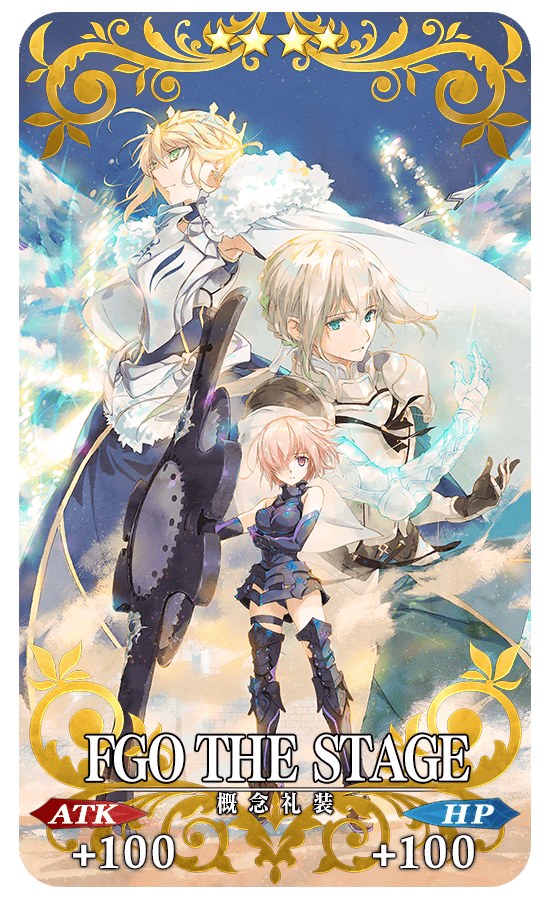
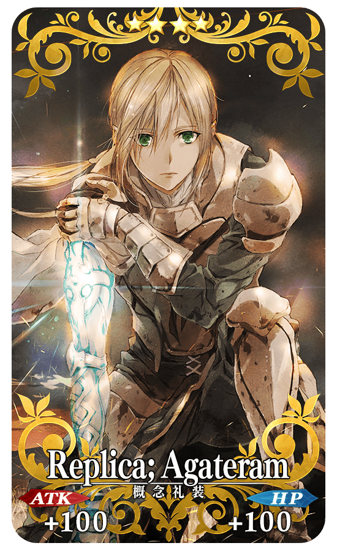
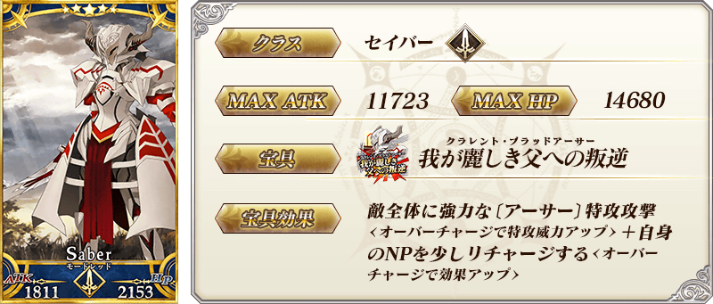
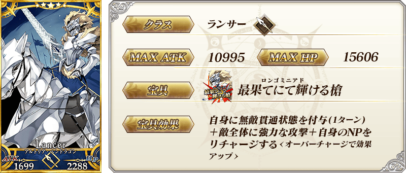
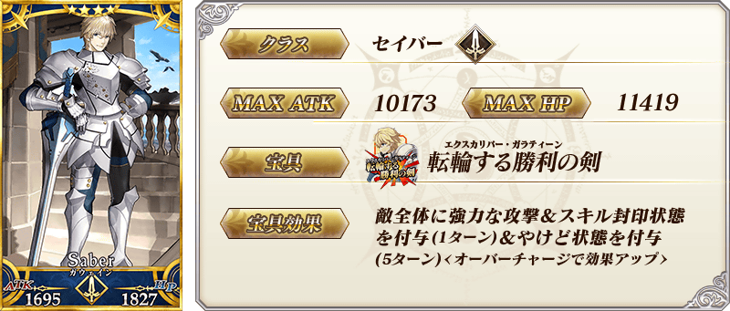
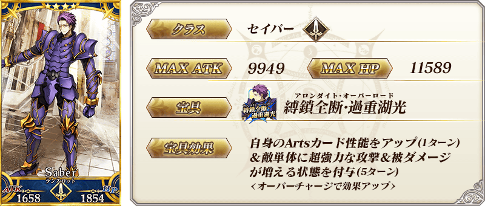
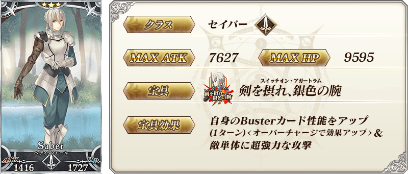
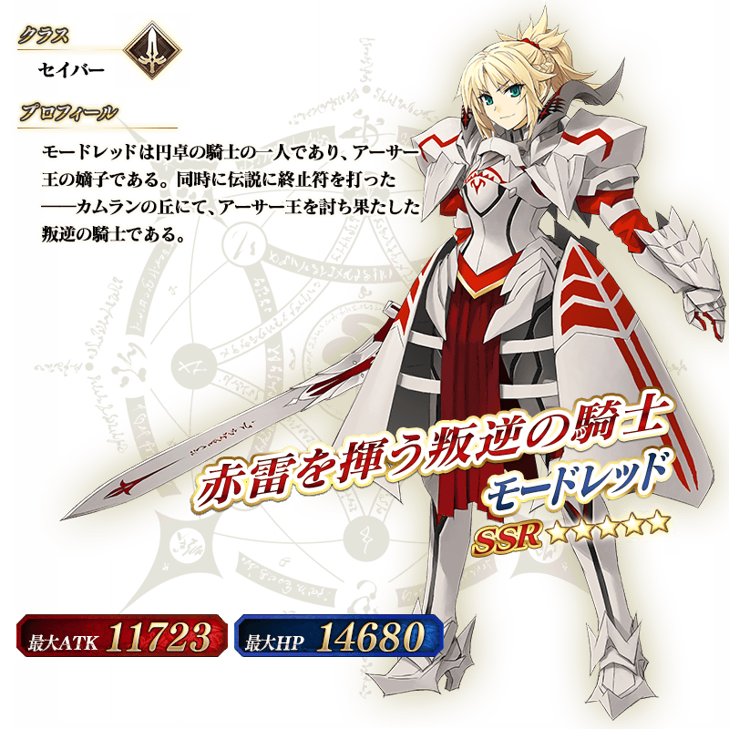
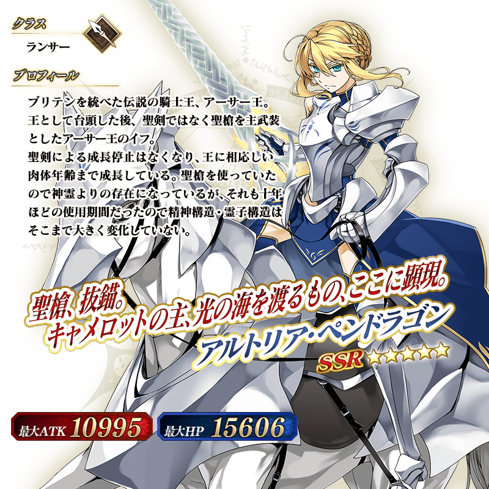

2018年2月26日(一) 17:00～3月7日(三) 11:59的期間，為了記念舞台「Fate/Grand Order THE STAGE –神聖圓桌領域卡美洛–」的Blu-ray&DVD的發售，舉辦「FGO THE STAGE Blu-ray&DVD發售記念宣傳活動」！
◆舉辦期間◆
2018年2月26日(一) 17:00～3月7日(三) 11:59
在迦勒底之門，通過下述的期間中出現的「FGO THE STAGE公演記念關卡」及「FGO THE STAGE 秋公演記念關卡」得到關卡限定的概念禮裝吧！
※請注意在「FGO THE STAGE公演記念關卡」及「FGO THE STAGE 秋公演記念關卡」並無冒險部份。
※請注意已經在2017年舉辦的宣傳活動獲得限定概念禮裝的話無法遊玩新記念關卡。
◆舉辦期間◆
2018年2月26日(一) 17:00～3月7日(三) 11:59
◆關卡開放條件◆
通過「特異點F 炎上汙染都市 冬木」的Master對象
◆「FGO THE STAGE公演記念關卡」限定概念禮裝◆
|  |
★★★★SR |
◆「FGO THE STAGE 秋公演記念關卡」限定概念禮裝◆
|  |
★★★★SR |
宣傳活動期間結束後，會將「FGO THE STAGE公演記念關卡」及「FGO THE STAGE 秋公演記念關卡」的概念禮裝獲得關卡追加到達文西工房內的「稀有稜鏡交換」。
| 追加道具 | 能交換 次數 |
必需的 稀有稜鏡數 |
|---|---|---|
| FGO THE STAGE獲得關卡 | 1次 | 3個 |
| Replica; Agateram獲得關卡 | 1次 | 3個 |
※追加到「稀有稜鏡交換」的概念禮裝獲得關卡為常駐，並無交換期限。
※關於已持有交換對象概念禮裝的玩家，剩餘次數的顯示會是「0次」，無法交換。
※在通過關卡入手的限定概念禮裝會是最大等級。
|
下述的期間中，在關卡開始時的支援選擇畫面，選擇其他Master的對象Servant做支援情況、其他Master選擇自己的對象Servant做支援情況的友情點數獲得量變成2倍。 ◆舉辦期間◆ |
 |
◆對象Servant◆
| 職階 | 稀有度 | Servant名 |
|---|---|---|
| Saber | ★★★★★ | 莫德雷德 |
| ★★★★ | 高文 | |
| ★★★★ | 蘭斯洛特 | |
| ★★★ | 貝德維爾 | |
| Archer | ★★★★ | 崔斯坦 |
| Lancer | ★★★★★ | 阿爾托莉亞・潘德拉剛 |
※請注意NPC Servant即使是對象Servant也在友情點數獲得量2倍的對象外。
下述的期間中，於「第六特異點 神聖圓桌領域 卡美洛」活躍的Servant對象，幕間物語的AP消耗量變成1/2。
※請注意強化關卡及曜日關卡為對象外。
◆舉辦期間◆
2018年2月26日(一) 17:00～3月7日(三) 11:59
◆對象Servant◆
| 職階 | 稀有度 | Servant名 |
|---|---|---|
| Saber | ★★★★★ | 莫德雷德 |
| ★★★★ | 高文 | |
| ★★★★ | 蘭斯洛特 | |
| ★★★ | 貝德維爾 | |
| Archer | ★★★★ | 崔斯坦 |
| Lancer | ★★★★★ | 阿爾托莉亞・潘德拉剛 |
◆「FGO THE STAGE Blu-ray&DVD發售記念Pick Up召喚(每日交替)」期間◆
期間:2018年2月26日(一) 17:00～3月7日(三) 11:59
舉辦期間限定「FGO THE STAGE Blu-ray&DVD發售記念Pick Up召喚(每日交替)」！
※未到達第六特異點的狀態也能進行「FGO THE STAGE Blu-ray&DVD發售記念Pick Up召喚(每日交替)」。
於舞台「Fate/Grand Order THE STAGE –神聖圓桌領域卡美洛–」和「第六特異點 神聖圓桌領域 卡美洛」活躍的Servant「★5(SSR)莫德雷德(Saber)」「★5(SSR)阿爾托莉亞・潘德拉剛(Lancer)」「★4(SR)高文」「★4(SR)蘭斯洛特(Saber)」「★4(SR)崔斯坦」以每日交替Pick Up，「★3(R)貝德維爾」常駐Pick Up。
※莫德雷德(Saber)、阿爾托莉亞・潘德拉剛(Lancer)、高文、蘭斯洛特(Saber)、崔斯坦、貝德維爾在Pick Up期間結束後仍會在故事召喚被抽出。
詳情請在聖晶石召喚畫面左下的召喚詳細確認。
Pick Up期間中，Pick UpServant的出現機率提升！
10次召喚中確定1張★4(SR)以上和確定1位★3(R)以上的Servant！
※確定★4(SR)以上包含Servant和概念禮裝。
※所謂「出現機率提升」意指比同稀有度的Servant及概念禮裝出現機率更高的設定。
| 每日交替Pick Up期間 | 每日交替Pick Up內容 |
|---|---|
| 2月26日(一) 17:00～22:59 | 阿爾托莉亞・潘德拉剛(Lancer) 高文 蘭斯洛特(Saber) 崔斯坦 |
| 2月26日(一) 23:00～2月27日(二) 22:59 | 莫德雷德(Saber) 高文 蘭斯洛特(Saber) 崔斯坦 |
| 2月27日(二) 23:00～ 3月1日(四) 22:59 |
莫德雷德(Saber) 阿爾托莉亞・潘德拉剛(Lancer) 高文 蘭斯洛特(Saber) 崔斯坦 |
| 3月1日(四) 23:00～3月2日(五) 22:59 | 莫德雷德(Saber) 阿爾托莉亞・潘德拉剛(Lancer) 高文 |
| 3月2日(五) 23:00～3月3日(六) 22:59 | 莫德雷德(Saber) 阿爾托莉亞・潘德拉剛(Lancer) 蘭斯洛特(Saber) |
| 3月3日(六) 23:00～3月4日(日) 22:59 | 莫德雷德(Saber) 阿爾托莉亞・潘德拉剛(Lancer) 崔斯坦 |
| 3月4日(日) 23:00～3月5日(一) 22:59 | 阿爾托莉亞・潘德拉剛(Lancer) 高文 蘭斯洛特(Saber) 崔斯坦 |
| 3月5日(一) 23:00～3月6日(二) 22:59 | 莫德雷德(Saber) 高文 蘭斯洛特(Saber) 崔斯坦 |
| 3月6日(二) 23:00～3月7日(三) 11:59 | 莫德雷德(Saber) 阿爾托莉亞・潘德拉剛(Lancer) 高文 蘭斯洛特(Saber) 崔斯坦 |
※請注意會以每日交替變更Pick Up的Servant。
※Pick Up期間中、阿爾托莉亞・潘德拉剛(Lancer)、高文、崔斯坦、貝德維爾就算第六特異點通過前也能入手。
介紹莫德雷德(Saber)、阿爾托莉亞・潘德拉剛(Lancer)的寶具演出！
在「Fate/Grand Order」官方網站內的公告中，公開了「★5(SSR)莫德雷德(Saber)」「★5(SSR)阿爾托莉亞・潘德拉剛(Lancer)」的寶具演出。敬請確認。












